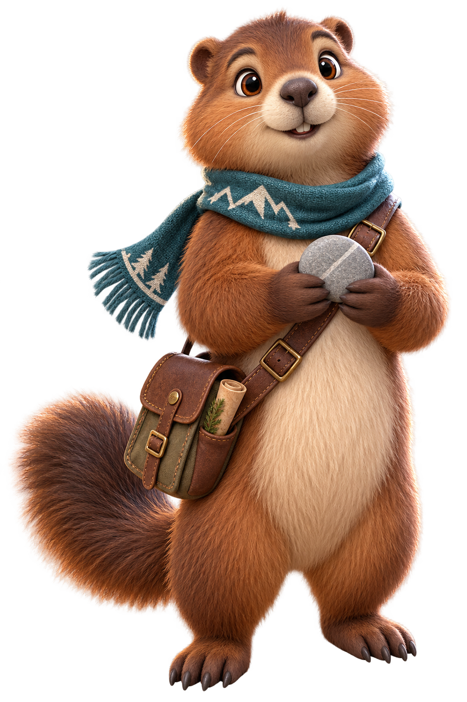
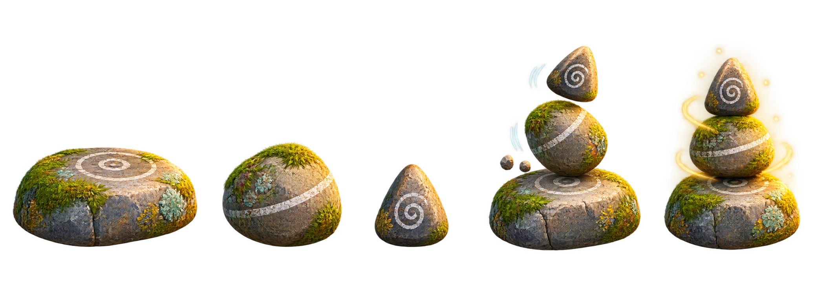

Settings

A calm support-order puzzle
Cairn Courier
Read the trail note, then stack three marked stones from base to cap.
Trail progress: 0 / 3
Best picks: Not yet

A calm support-order puzzle
Read the trail note, then stack three marked stones from base to cap.
Trail progress: 0 / 3
Best picks: Not yet
